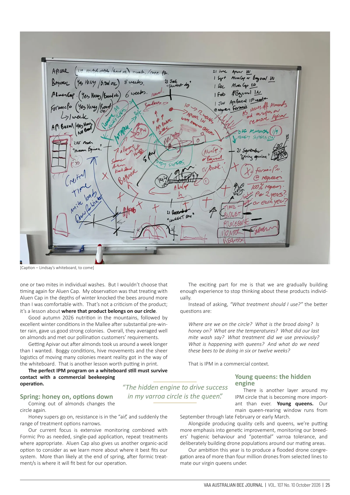

VAA AUSTRALIAN BEE JOURNAL | VOL. 107 No. 10 October 2026 | 25
one or two mites in individual washes. But I wouldn’t choose that
timing again for Aluen Cap. My observation was that treating with
Aluen Cap in the depths of winter knocked the bees around more
than I was comfortable with. That’s not a criticism of the product;
it’s a lesson about where that product belongs on our circle.
Good autumn 2026 nutrition in the mountains, followed by
excellent winter conditions in the Mallee after substantial pre-win-
ter rain, gave us good strong colonies. Overall, they averaged well
on almonds and met our pollination customers’ requirements.
Getting Apivar out after almonds took us around a week longer
than I wanted. Boggy conditions, hive movements and the sheer
logistics of moving many colonies meant reality got in the way of
the whiteboard. That is another lesson worth putting in print.
The perfect IPM program on a whiteboard still must survive
contact with a commercial beekeeping
operation.
Spring: honey on, options down
Coming out of almonds changes the
circle again.
Honey supers go on, resistance is in the “air,” and suddenly the
range of treatment options narrows.
Our current focus is extensive monitoring combined with
Formic Pro as needed, single-pad application, repeat treatments
where appropriate. Aluen Cap also gives us another organic-acid
option to consider as we learn more about where it best fits our
system. More than likely at the end of spring, after formic treat-
ment/s is where it will fit best for our operation.
The exciting part for me is that we are gradually building
enough experience to stop thinking about these products individ-
ually.
Instead of asking, “What treatment should I use?” the better
questions are:
Where are we on the circle? What is the brood doing? Is
honey on? What are the temperatures? What did our last
mite wash say? What treatment did we use previously?
What is happening with queens? And what do we need
these bees to be doing in six or twelve weeks?
That is IPM in a commercial context.
Young queens: the hidden
engine
There is another layer around my
IPM circle that is becoming more import-
ant than ever. Young queens. Our
main queen-rearing window runs from
September through late February or early March.
Alongside producing quality cells and queens, we’re putting
more emphasis into genetic improvement, monitoring our breed-
ers’ hygienic behaviour and “potential” varroa tolerance, and
deliberately building drone populations around our mating areas.
Our ambition this year is to produce a flooded drone congre-
gation area of more than four million drones from selected lines to
mate our virgin queens under.
“The hidden engine to drive success
in my varroa circle is the queen.”
[Caption – Lindsay’s whiteboard, to come]